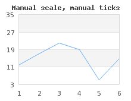

The scale of the graph axis are controlled by either
Graph::SetScale() which can take on of the following
strings as argument
"intint", "intlin", "intlog", "linint", "linlin", "linlog", "logint", "loglin", "loglog", "textint", "textlin", "textlog", "datint","datlin","datlog"
The first half of the string argument specifies the x-axis scale and the second half of the string specifies the y-axis scale. When an y2 or multiple y-scales (see ??
The scale for a basic graph is specified with a call to
Graph::SetScale() and supplying the wanted scales for the
x- and y-axis. For numeric data there are three basic scales
available
Integer scale "int"
Linear scale (a.k.a decimal labels)
Logarithmic scales
The choice of scale will affect how the autoscaling is done and how the labels will look. Choosing an integer scale will, as the name suggests, restrict the labels to integer and integer interval between the scale step (at each tick mark). The linear scale has no such restriction and can be considered a superset of the integer scale (even though the implementation is done in rather the opposite way). Labels for linear scale can have fraction intervals and will shows the decimal values by default in the labels. Finally the logarithmic scale will create a deca - logarithmic scale.
The style of the labels can be formatted in two ways
By specifying a format string (in printf()
format) to be used by calling the method
Axis::SetLabelFormatString() The format string
is interpretated according to the second parameter. If that
parameter is "true" then the format string will be
assumed to give a date format as expected by the
date() function. This is an easy way to
translate timestamp values to proper time/date labels.
By specifying a callback function. The callback
function/method will be called with the label as the only
argument and must return the label that should be printed
Axis::SetLabelFormatCallback()
For example. An easy way to get 1000' separators for numbers is to add the PHP function number_format() as callback to the wanted y-axis as in
1 | $graph->yaxis->SetLabelFormatCallback('number_format'); |
Another example of using a callback function is to "revert" the y-axis. By default the y-axis grows from the bottom and up. But what if we want the y-axis to grow from top to bottom, i.e. the 0-value should be at the top and the largest value at the bottom?
The way to accomplish this is to use a negative y-scale which
the plot is made against (by negating all the data values in the
data serie). This would then give the appearance that we want
apart from the act that all labels will have a minus sign in
front of them. By creating a callback function that just returns
the absolute value of the label we can adjust that and we get
the effect that we want. Figure 14.19. Inverted y-scale to show a dive profile (
shows an example of a "dive-curve" where the sea-level is at the
top of the graph to give better connection to this particular
use-case.inyaxisex2.php)
The dive profile in Figure 14.19. Inverted y-scale to show a dive profile ( is an actual dive of one of the authors dives in the
Gulf of
Bothniainyaxisex2.php)
There is only one pure textual scale type
Text scale ("text")
This type of scale is exclusively used for the x-axis.
The primary use of this scale is to label bars in a bar graph. However, as
will be shown this can also be used at other occasions to achieve various
wanted effects. There is no concept of autoscaling for text scales. Instead
the whole purpose of this type of scale is for the user to manually supply
the wanted labels in an array using the method
Axis::SetTickLabels().
The other key difference for a text scale as compared to the numeric scales is that the labels are positioned in between the tick marks and not directly under them. This is the common practice to label bar graphs and hence this is the way text scale works.
Normally the scale is determined automatically in the library by analyzing the input data and making sure that a suitable scale is established that fulfill the following criteria:
The full dynamic scope of the data series can be displayed
The step size between major tick marks (tick marks that have a label) is a multiple of either (1, 2, 5, 10 ) * 10 ^n, where the size of 'n' is determined by the dynamic range of the data.
In addition the number of labels is dependent on the size of the graph. A smaller graph will have fewer labels since there is "physically" not enough room to show too many labels.
Internally the auto scaling algorithm has fair amount of intelligence to try to make the scale in the same way a human would so ti. For example the origin has a specially strong attraction meaning that the autoscaling will try hard to make sure 0 is included in the scale as long as it "makes sense".
Usually this works fine in most cases but there are always exception where exact control over the scale is wanted. For example to be able to compare several graphs that might otherwise get different scales. There are two ways of manually adjusting the scales.
Manual min/max values but with the tick marks automatically determined
In this case the exact min/max value of the scale is submitted to the SetScale() method call to set either (or both) of the x- and y-scale. Since the first two argument after the scale type determines the y min/max and the fourth and fifth argument specifies the x min/max this means that in order to specify the x scale the y scale must have some values. If the y axis should be left alone (i.e. to be autoscaled) then just put the "dummy" values (0,0) as placeholder in the method call. The following examples clarifies this.
$graph->SetScale('intlin',0,0,-10,20);
Y-scale is autoscaled and the x-scale is set to [-10,20]
$graph->SetScale('intlin',0,50);
Automatic x-scale and manual y-scale with range [0,50]
$graph->SetScale('intlin','-10,10,-20,20);
Manual x- and y-scale
Semi automatic (or semi manual)
This is a away to lock either the min or max value and let the auto scaling algorithm determine a suitable corresponding max and min value. This can be very useful to make sure that for example the 0 value is always includeded even if the minimal value is so high that the autoscaling algorithm have chosen to start at a larger value. These two locked down values are set with the two methods
Scale::SetAutoMin()
Example:
$graph->yaxis->scale->SetAutoMin(0);
This will lock the y-min to 0
Scale::SetAutoMax()
Example:
$graph->xaxis->scale->SetAutoMax(1000);
This will lock the x.max to 0
The final step in understanding the scaling is to understand tick marks. There are two types of tick marks, major and minor. Major tick marks are tick marks that have a label associated. Up to now we have assumed that the library adjusts where the tick marks are positioned and the inter spacing between tick marks.
The tick object is available as an instance variable of the scale class which means that you can access and adjust the tick mark properties by accessing:
$Graph::Axis::Scale::ticks
For further fine control of the scale it is possible to manually adjust the major and minor ticks using one of the three methods
Adjusting how dense the auto scaling algorithm should put the tick marks.
Even when using a fully automatic scaling it is possible to adjust how many tick marks that the algorithm should try to place on the scale. This is controlled with the method
Graph::SetTickDensity($aYDensity,
$aXDensity)
The y- and x-scale density can be set to one of the following (symbolic) values
TICKD_DENSEk
TICKD_NORMAL
TICKD_SPARSE
TICKD_VERYSPARSE
By default the density for all scales are set to
TICKD_NORMAL
As a comparison Figure 14.21. Fully automatic not so good scaling ( is the exact
same as Figure 14.20. Setting tick density to TICKD_DENSE manscaleex2.php)( with the difference
that in this figure the density for the y-scale has been set to
manscaleex3.php)TICKD_DENSE
Manually specifying the step size between each minor and major tick.
This is done using the method
LinearTicks::Set($aMajStep,$aMinStep=false)
please note that this is a method of the Tick class which is available as an instance variable in the scale class
Example:
$graph->xaxis->scale->ticks->Set(20,5);
This type of manual positioning of the tick marks might be useful if the scale has been set to some non-multiples of 1,2,5,10. The following examples will clarify this. In ?? the left graph is what we get after manually specifying the y min/max values to (3,35). In this case the auto scaling algorithm fails to assign "nice" steps to the y-axis so that the tick marks starts and begins at the min/max of the scale. If we manually set the tick distance to be (8,2), i.e. we set the major tick marks 8 units apart and the minor (non-labeled) tick marks 2 steps apart we get the much nicer result as shown in the right graph in ??
|
|
Figure 14.22. Manually specified tick distance which gives a much better appearance 
|
The major tick step must be an even multiple of the minor tick step. If this is not the case the library will automatically adjust the major step size to be the closest multiple of the minor step size.
Specify the exact position for each single tick mark
This is often used to position only the major tick marks to be
able to have labels at very specific points in the graph. One
example of how to use this was shown in Figure 8.8. Specifying manual ticks as fraction of Pi. ( where the tick marks were
positioned at factions of π. Another typical example is to place a
label at exactly the beginning of a month. Since months have
different lengths there is no other way if 100% precision is wanted.
An example of this is shown in Figure 14.23. Manually specifying the tick position for each month manualtickex2.php)(
manualtickex1.php)
When the tick position is manually set there should also be a corresponding array of labels to be put at these positions.
Adjusting the size and on what side the tick marks should be drawn
The side on the axis which has the tick marks is adjusted with a call to
Axis::SetTickSide($aTickSide)
Possible options for the tick side are
SIDE_UP
SIDE_DOWN
SIDE_LEFT
SIDE_RIGHT
For example, the following lines added to a script would change side of the labels and tick marks for the x-axis.
1 2 3 4 | $graph->xaxis->SetLabelPos( SIDE_UP ); $graph->xaxis->SetTickSide( SIDE_DOWN ); |
This technique can for example be used to put the x-axis at the top of the graph as the following example shows.
Figure 14.24. Adjusting the side which have the tick marks and position the x-axis at the top ( topxaxisex1.php)
In passing we mention that there are additional ways to adjust the look and feel of the tick marks which is discussed in the next section (Adjusting the appearance of the scale labels) in detail.